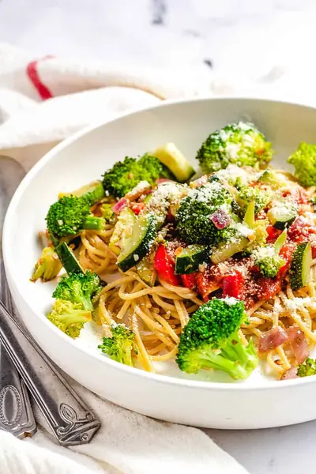

Healthy Garlic Veggie Pasta

Ingredients
- 8 oz whole wheat spaghetti (2oz per serving)
- 1 tsp extra virgin olive oil
- 6 cloves garlic (minced)
- 2 cups pasta sauce (choose a variety with no sugar added)
- 1 red onion (diced)
- 2 red bell peppers (diced)
- 2 small broccoli heads (chopped into small florets)
- 3 zucchini (diced)
- 1/4 tsp crushed red pepper
- 1 tsp dried oregano
- 1/4 cup parmesan cheese (use 1-2 Tbsp per serving)
- salt & pepper to taste
Steps
- Cook spaghetti according to package directions, set aside.
- Heat a large skillet over medium heat. Add olive oil, onions, and garlic - saute for 3-5 minutes, until the onions are slightly translucent.
- Add the broccoli, zucchini, oregano, crushed red pepper, and salt/pepper to taste. Cook for 5-10 minutes until all of the vegetables have cooked through.
- Heat the spaghetti sauce in a small pot over low heat. Add the diced red bell peppers to the sauce, simmer for 10 minutes.
- To serve: take 2 oz of the whole wheat spaghetti and top with 1/4 of the sauce, 1/4 of the vegetable mixture, and 1 Tbsp parmesan cheese.
Recipe by Anjali Shah · The Picky Eater, from The Picky Eater. Saved here for personal use; the original has the full notes, tips and photos. Open original